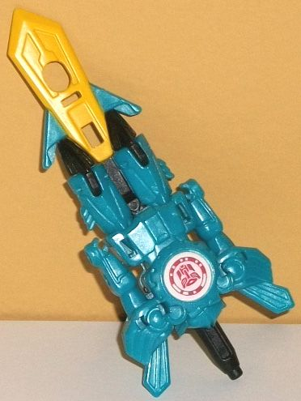
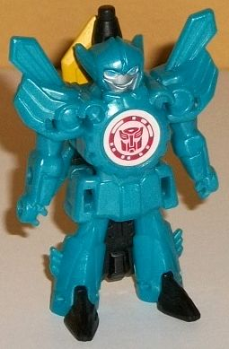
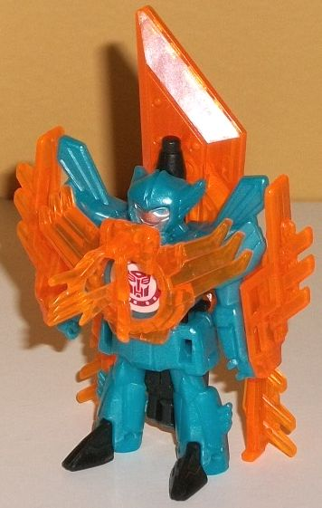
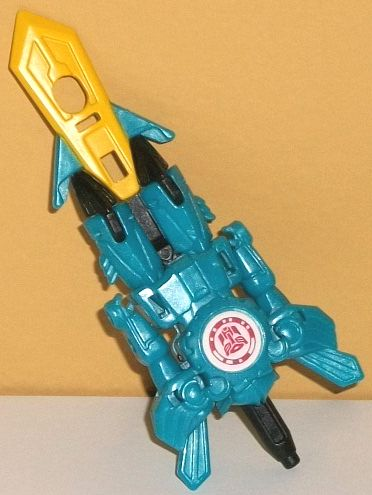
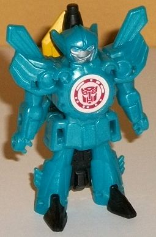
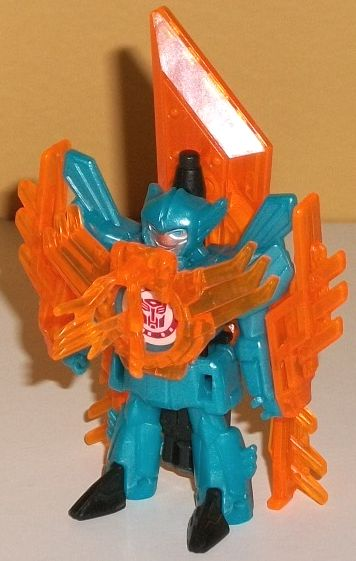
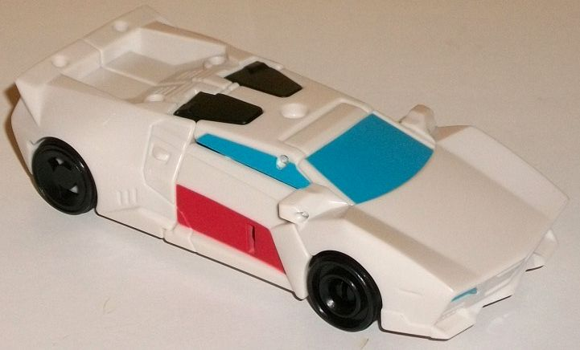
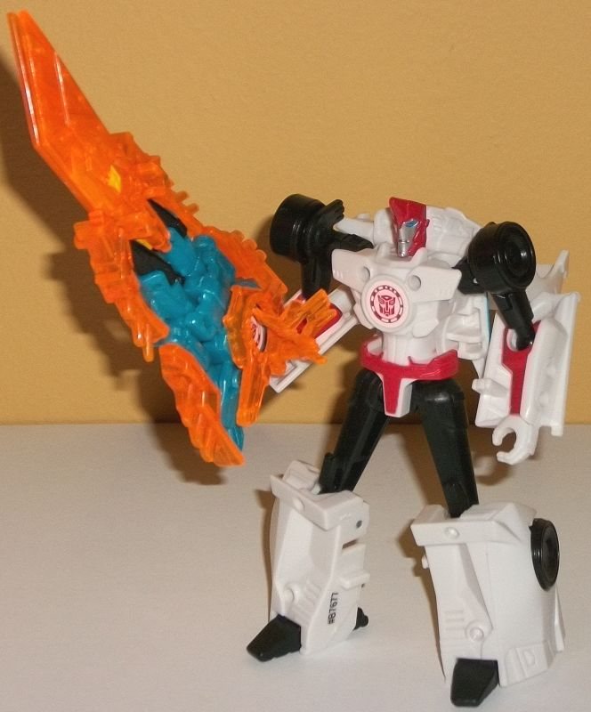
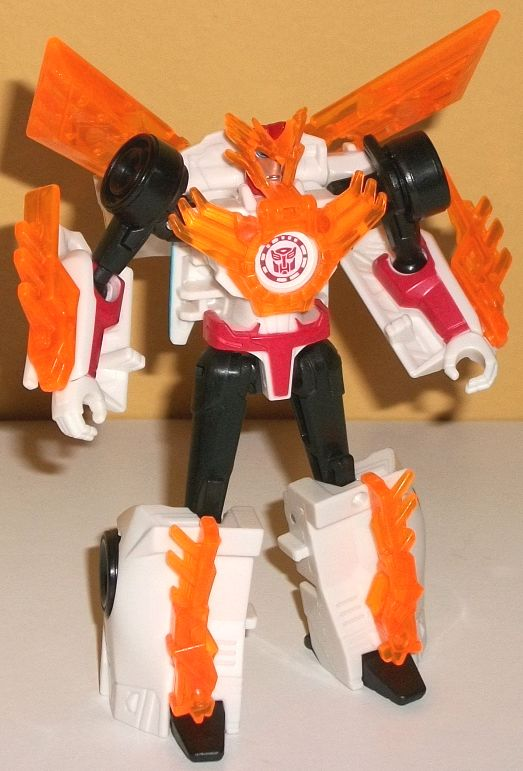

  
Allegiance : Autobot
Difficulty of Transformation : Very Easy
Color Scheme : Milky teal, translucent fiery orange, and some black, silver, moderately light blue, and yellow
Individual Rating : 4.2
 Windstrike
Windstrike



Allegiance
: Autobot
Difficulty of Transformation
: Very
Easy
Color Scheme
: Milky teal, translucent
fiery orange, and some black, silver, moderately light blue, and yellow
Individual Rating
: 4.2
Since so much of my comments
on Windstrike's weapon mode relate to her robot mode, as opposed to most
Mini-Con reviews I'll cover her robot mode first. She's a bit small, even
for a Mini-Con, in this mode. However, she does have a cute, friendly face,
with little "feather"-like side antennae sticking off said face. Overall
it looks like she's wearing some slim knight armor, with (relatively) large
shoulders with more of those feather-blade like details coming off the
tops. Her chest is a big gear with the Autobot scan symbol in the middle,
and not much else. She has an armor "skirt" detailed on her waist, and
both her legs and arms are rather slim. Her legs get a bit bigger near
the feet, making her pretty stable, but her hands are so tiny it's hard
to see her being able to grab anything with them. She's almost entirely
a milky teal in this mode-- it's not a bad color, but MAN does she need
more variety. She's got some black on her toes and a few minor connector
pieces (mostly behind her back or sticking up slightly behind her head),
and yellow on the blade, that's also behind her back. But as far as her
robot mode proper, the only paint here is the silver on her face and light
blue on her eyes. She's also a statue in this mode-- no articulation whatsoever.
To transform Windstrike
to dagger mode, it's pretty simple; just fold down the blade part on her
back, fold down her feet, and then tug up on the handle behind her head
slightly, which causes her head to slide down into her body and her appendages
to contract a bit into said body as well. I mean, she does an... okay?...
job contracting, but it's painfully, PAINFULLY obvious that this is her
robot mode with a sword blade sticking out the bottom. The proportions
aren't right at all-- her robot body makes up far too much of this mode,
and the blade too little. It's like she's all hilt and practically no blade.
To be fair, the blade's yellow color goes nicely with her milky teal plastic,
and the little "wings" coming off the bottom edges of the blade match the
wings coming off Windstrike's robot shoulders, but it's still a pretty
bad weapon mode. With a blade that small, I'm not sure what she's planning
on cutting, but it can't be big.
Unlike the non-Weaponizer
Mini-Con Battle Packs, the armor parts that come with this pack can go
on the Mini-Con, too! All of the pieces are a fiery transparent orange,
which gives some much-needed contrast and variation to her color scheme.
In robot mode, Windstrike has a feathered chest piece-- though unfortunately,
due to it also being used for Sideswipe, the helmet piece has to be folded
forward over the chest, which is a bit of an eyesore and actually gets
in the way of her face a bit. Two pieces go over the dagger on her back,
making it SIGNIFICANTLY longer and more asymmetrical. Additionally, two
skinny feathered armor pieces slide over the lower part of her blade/backpack,
and two more skinny feathered armor pieces attach to the side of her arms.
In robot mode. it frames the look of her mode decently well, with the arm
pieces giving her some blade offensive weapons, but it's clear the main
reason for these armor pieces is to use them on her weapon mode (see the
pic of Sideswipe below). And in that mode, WOW what a difference the armor
makes. I mean, the "body" of the blade is still way too big, and the robot
chest piece kinda sticks out a bit too much, but the feathered side pieces
make the whole edges of the body look jagged in a pretty cool manner, and
adding that much girth to her blade while lengthening it so much on one
end looks great. I mean, her blade's still short, but it actually looks
like it can harm someone, now.
 Sideswipe
(Alpine Strike)
Sideswipe
(Alpine Strike)



Allegiance
: Autobot
Difficulty of Transformation
: Very
Easy
Color Scheme
: White, translucent
fiery orange, black, and some moderately dark red, silver, and moderately
light blue
Individual Rating
: 8.0
(NOTE: Because this is a repaint, this is not a full-blown review. This mainly covers any changes made to the mold and the color scheme, and merely compares it to the original Mini-Con Battle Pack Sideswipe. For a review on the mold itself, read the review of the original Mini-Con Battle Pack Sidewipe here .)
Sideswipe's "Alpine Strike"
redeco takes the same ideas as the
Legion
class redeco
of the same name-- that is, yes it's kind of a themed
redeco, but it's basically Hasbro's way of making RID2015
Red
Alert
without having to dedicate a new head mold or character slot
to him. That said, it's not exactly a one-to-one replica of the Legion
class version. For one, the red stripe across the entire sides of the vehicle
mode is partially missing from this one-- unfortunately, as the vehicle
mode in particular could've used some more paint to spice it up. There's
still some on the sides of the car doors, but it's not nearly as much,
comparatively. If it worked on the tiny Legion class toy, why not on this
one? Alpine Strike Sideswipe's vehicle mode is mostly white, with some
black on obvious parts like the wheels, and on two portions of the rear
hood that become his feet in robot mode. That moderately light blue shade
of paint used on the windows and headlights is dynamite, though, and looks
really nice-- "Red Alert accurate" or not, I wish it had been used more
elsewhere on the toy, as it pops off the white quite well. In robot mode
Sideswipe has black in all the same places as the original-- that is, on
the upper legs, shoulders, and upper arms. There's also some red on the
head, waist, and lower arms, silver on his face, and light blue on his
eyes. However, just like in the vehicle mode, even though there's SOME
red, there doesn't seem to be enough. Using some on the chest or lower
legs would've looked better, methinks.
Although no mold changes
have been made to the core mold, of course Sidewipe comes with the new
armor pieces that Windstrike comes with-- and with Mini-Con Battle Packs,
these armor bits can be used on both of them! Since Sideswipe already comes
with a weapon(izer) this time, the armor doesn't form a weapon for him
anymore, but it can still form... well... armor. Regarding the placement
and general look of the armor, Alpine Strike Sideswipe takes some visual
cues from Windstrike. He's got the spiky pieces from the side of Windstrike's
robot mode on his lower arms and legs, while Windstrike's chest piece also
plugs into his chest, but this time with the helmet piece rotated up--
it gives his face and chest some aspects of Windstrike's, what with the
feather-like sidecrests on both. Sideswipe's pointy hair is made more spiky
with this nifty helmet, too. Just like Windstrike's robot mode, two of
the armor pieces fit onto Sideswipe's car hood-kibble on his back to become
wing-like structures. These look pretty cool, but unfortunately they fall
off a bit easily, at least on mine. The fiery orange color of all these
bits contrasts very well against all of Sideswipe's white and black, and
helps make the color scheme look considerably better than the semi-bland
way it otherwise looks in this mode.
The Alpine Strike Sideswipe
& Windstrike Mini-Con Battle Pack is certainly not a BAD set by any
means, but it's not the easiest sell of the size class, either. Given how
little red paint is on Alpine Strike Sidewipe, I think the original version
of this mold looks better than this redeco, and the armor bits-- while
a nice color-- aren't as impressive on Sideswipe this time around as the
previous armor bits. Windstrike's color scheme in her single-pack Mini-Con
release also looks better, as well, even if her armored-up sword mode is
really cool. Normally that would make this a pass and I'd recommend the
other versions of these molds instead. BUT. The single-pack redeco of Windstrike
was not released in the U.S., and is fairly hard/expensive to obtain at
this point. If you want Windstrike represented in a way that's sized with
non-Power Surge Mini-Cons, this is really your only relatively cheap option,
and it's not like Alpine Strike Sideswipe is BAD, so... mildly recommended,
keeping in mind the aforementioned caveats.
Reviews by Beastbot